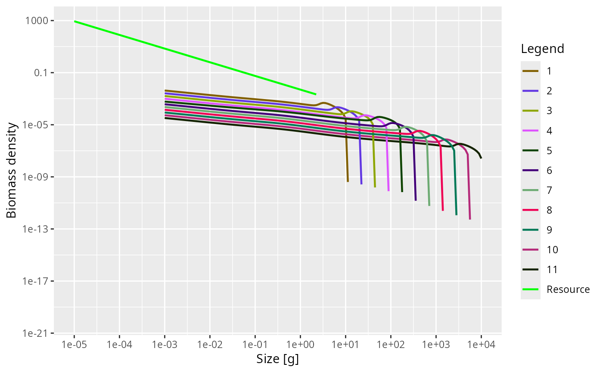

The steady state is found by running the dynamics while keeping reproduction,
resource and other components constant until the size spectra no longer
change much (or until time t_max is reached, if earlier).
Usage
steady(
params,
t_max = 100,
t_per = 1.5,
dt = 0.1,
t_save = dt,
tol = 0.1 * dt,
amplitude_tol = 0.01,
amp_rel_tol = 0.01,
extinction_threshold = 1e-06,
return_sim = FALSE,
preserve = c("reproduction_level", "erepro", "R_max"),
progress_bar = TRUE,
info_level = default_info_level(),
method = c("euler", "predictor_corrector", "tr_bdf2")
)Arguments
- params
A MizerParams object
- t_max
The maximum number of years to run the simulation. Default is 100.
- t_per
The simulation is broken up into shorter runs of
t_peryears, after each of which we check for convergence. Default value is 1.5. This should be chosen as an odd multiple of the timestepdtin order to be able to detect period 2 cycles.- dt
The time step to use in
project().- t_save
The interval at which a cheap per-species biomass summary is recorded for limit-cycle detection. Must be a positive multiple of
dtand a divisor oft_per. Smaller values resolve the cycle period more finely at a small extra cost. Default isdt.- tol
The simulation stops when the relative change in the egg production RDI over
t_peryears is less thantolfor every species.- amplitude_tol
![[Experimental]](figures/lifecycle-experimental.svg) The minimum relative biomass amplitude for a persistent oscillation to be
reported as a limit cycle rather than treated as an (effectively steady)
fixed point. This is a fraction of mean biomass and is kept separate from
The minimum relative biomass amplitude for a persistent oscillation to be
reported as a limit cycle rather than treated as an (effectively steady)
fixed point. This is a fraction of mean biomass and is kept separate from
tol(which measures convergence to a fixed point on a different scale). Default0.01.- amp_rel_tol
-
Maximum relative change of amplitude between successive periods for the
cycle to count as settled. Default
0.01. - extinction_threshold
-
A species is treated as going extinct, stopping the run, once its
reproduction rate (RDD) falls below this fraction of its value at the start
of the run. For example the default
1e-6treats a species as extinct once its reproduction has collapsed to a millionth of its initial level. Because it is relative to the initial reproduction, a species that starts with zero reproduction is flagged immediately, and (insteady(), where reproduction is held constant) a healthy species is never flagged. - return_sim
If TRUE, the function returns the MizerSim object holding the result of the simulation run, saved at intervals of
t_per. If FALSE (default) the function returns a MizerParams object with the "initial" slots set to the steady state.- preserve
-
Specifies whether the
reproduction_levelshould be preserved (default) or the maximum reproduction rateR_maxor the reproductive efficiencyerepro. SeesetBevertonHolt()for an explanation of thereproduction_level. - progress_bar
A shiny progress object to implement a progress bar in a shiny app. Default FALSE.
- info_level
Controls the amount of information messages that are shown. Higher levels lead to more messages,
info_level = 0gives silence. The default is taken from themizer_info_leveloption, seedefault_info_level().- method
The numerical method to use for the consumer density update. See
project().
Value
If return_sim = FALSE, a MizerParams object with the initial
state replaced by the steady state. If return_sim = TRUE, a MizerSim
object containing the intermediate states saved every t_per years. The
returned object carries a "convergence" attribute describing the solution
found (steady state, limit cycle, or non-convergence); see
projectToSteady(). Check it: convergence is not guaranteed.
Details
Holding those constant is what makes the search reliable, but it does not
make the result certain: the state that is stored is only as close to a fixed
point as tol and t_max allowed, and the run may instead have stopped on a
limit cycle or on a species going extinct. Check the result rather than
assuming it; see the section below.
If the model use Beverton-Holt reproduction then the reproduction parameters
are set to values that give the level of reproduction observed in that
steady state. The preserve argument can be used to specify which of the
reproduction parameters should be preserved.
The resource is rebalanced so that the returned state is a steady state of the resource as well as of the consumers. The resource abundance is preserved while the capacity is recomputed to keep it steady. If the resource capacity had been set manually (frozen), it is rebalanced and thereby unfrozen.
What you get back may not be a steady state
The stopping criterion is a proxy. It says that two states t_per years
apart differ by less than tol on whatever scale the criterion is measured
on; it does not say that the state reached is a fixed point. There are four
ways the returned object can fail to be one:
the run converged on its own scale while the biomasses are still visibly drifting, because
tolwas too loose;the run reached
t_maxwithout converging (type = "not_converged");the run settled on a limit cycle (
type = "cycle"), in which case the state stored is one point on that cycle;the run stopped because a species was going extinct (
type = "extinction").
So treat the result as a claim to be checked rather than as a guarantee:
attr(params, "convergence")$type # "steady", "cycle", "not_converged", "extinction"
attr(params, "convergence")$residual # largest biomass drift, in 1/year
isSteady(params) # TRUE if within tolerance
summary(params) # includes the biomass-drift verdict
plot(getSteadyResidual(params)) # which species, and at which sizesThe first four say whether the model is steady, the last says where it
is not, which is the one to reach for when it is not: a model that is off
steady state is usually off in one species or one part of the size range,
and the plot names it. See getSteadyResidual() for why the verdict is
phrased in terms of biomass drift rather than the largest per-capita rate.
The messages this function prints say the same thing — a converged run
whose biomasses are still moving reports the drift and adds "Reduce tol
to converge further." — but they are suppressed by info_level = 0, so in
a script the "convergence" attribute is the reliable check.
Finally, a genuine fixed point need not be a stable one. Use
getStability() to find out, and steadyNewton() to converge onto a fixed
point that the dynamics themselves would run away from.
Examples
# \donttest{
params <- newTraitParams()
species_params(params)$gamma[5] <- 3000
params <- steady(params)
#> Convergence was achieved in 12 years.
plotSpectra(params)

# }